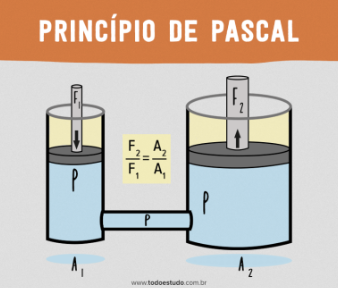

Blaise Pascal nació el 19 de junio de 1623 en Clermont-Ferrand, Francia. Fue hijo de Étienne Pascal, un funcionario y matemático aficionado que se encargó personalmente de su educación tras la muerte de su madre, Antoinette Begon. Desde muy pequeño mostró un talento extraordinario para las matemáticas. Se dice que, siendo aún niño, redescubrió por sí mismo varios principios de la geometría sin haber recibido enseñanza formal en esa área.
A los 16 años escribió un importante trabajo sobre geometría proyectiva conocido como Ensayo sobre las cónicas, donde formuló el teorema de Pascal. Más tarde inventó una de las primeras calculadoras mecánicas, llamada la “Pascalina”, diseñada para ayudar a su padre en cálculos fiscales. Este invento lo convierte en uno de los pioneros de la computación mecánica.

Pascal también realizó importantes aportaciones a la física, especialmente en el estudio de la presión atmosférica y los fluidos. El principio de Pascal, fundamental en la hidráulica, establece que la presión aplicada a un fluido en reposo se transmite por igual en todas las direcciones. En matemáticas, junto con Pierre de Fermat, sentó las bases de la teoría de la probabilidad a través de su correspondencia sobre problemas relacionados con juegos de azar.
En la etapa final de su vida se dedicó más intensamente a la filosofía y la teología. Su obra más conocida en este ámbito es "Pensamientos" (Pensées), donde reflexiona sobre la condición humana, la fe y la razón.
Blaise Pascal falleció el 19 de agosto de 1662 en París, Francia, a la edad de 39 años. A pesar de su corta vida, dejó un legado profundo en matemáticas, física, filosofía y en el desarrollo temprano de las máquinas de cálculo.